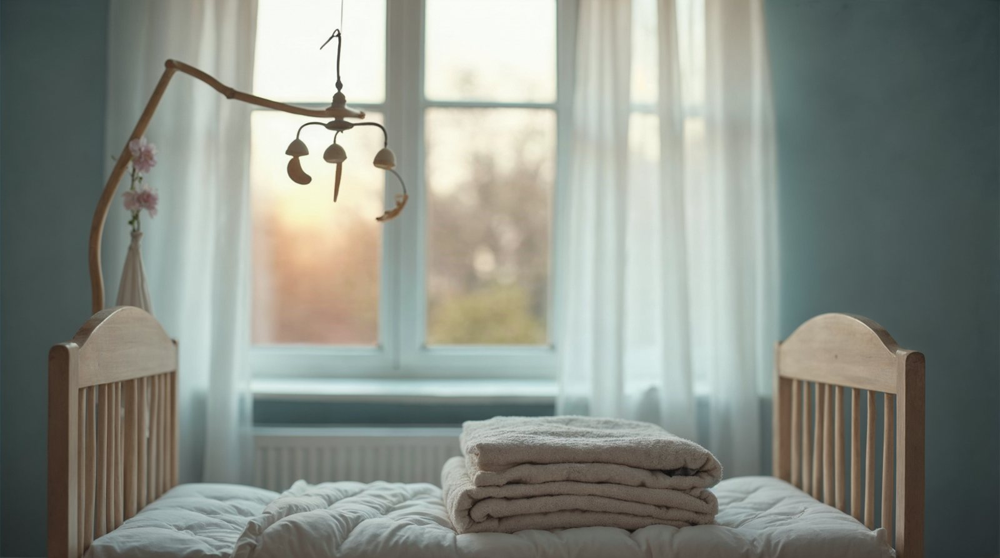
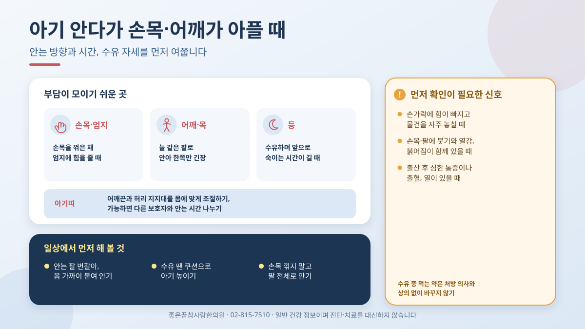

이종호 한의사 감수좋은꿈참사랑한의원 대표원장 (한의사 면허번호 19769)발행 2026-11-23 · 수정 2026-11-25
이 글의 차례
아기를 안는 일은 하루에도 수십 번 반복됩니다. 손목이나 어깨가 아파 온다면 아기 탓이 아니라 안는 방식과 쉴 틈 없는 일과가 겹친 결과일 수 있어, 자세부터 차근차근 살펴볼 만합니다.
왜 이런 불편이 생길 수 있나요
- 아기를 받칠 때 손목을 꺾은 채 엄지에 힘을 주면 손목 엄지 쪽 힘줄에 부담이 모일 수 있습니다.
- 늘 같은 팔로 안으면 한쪽 어깨와 목만 계속 긴장합니다.
- 수유하며 몸을 앞으로 숙이는 시간이 길면 등과 어깨가 굳기 쉽습니다.
- 밤에 자주 깨 쉬지 못하면 같은 부담도 더 크게 느껴집니다.
먼저 이렇게 여쭙니다
- 아기를 주로 어느 쪽 팔로 안으시나요? 늘 같은 쪽인가요?
- 손목이나 엄지 쪽이 아픈가요, 어깨와 목이 더 아픈가요?
- 수유할 때 허리를 숙이거나 어깨를 올리고 계시지 않나요?
- 밤에 자주 깨서 충분히 쉬지 못하고 있나요?
- 아기띠나 유모차는 어떻게 쓰고 계신가요?
일상에서 먼저 해 볼 수 있는 것
- 안는 팔을 번갈아 바꾸고 아기를 몸 가까이 붙여 안기
- 수유 때 쿠션으로 아기를 높여 허리와 어깨를 숙이지 않기
- 손목을 꺾어 받치기보다 팔 전체로 안아 부담 나누기
- 아기띠는 어깨끈과 허리 지지대를 몸에 맞게 조절하기
- 가능하면 다른 보호자와 안는 시간을 나누기
한의원에서 함께 살필 수 있는 경우
- 안을 때마다 손목과 엄지 쪽이 시큰한 경우 손을 쓰는 방식과 자세를 함께 살핍니다.
- 어깨와 목이 뭉치고 등까지 뻐근해지는 경우 하루 동안의 자세와 쉬는 시간을 함께 살핍니다.
- 잠이 부족해 몸이 더 무겁게 느껴지는 경우 회복에 필요한 휴식과 생활 리듬을 함께 살핍니다.
좋은꿈참사랑한의원에서는 아기를 안는 동작을 직접 재현해 보며 아픈 지점을 확인하고, 손목과 어깨, 목의 긴장을 함께 살핍니다. 필요하다고 판단될 때 침이나 추나 등을 정하며, 수유 중이라면 그 점을 고려해 방법을 고릅니다. 귀가 전에는 집에서 바꿔 볼 안는 자세를 함께 정리합니다.

얼마나 지켜보고 언제 진료를 받으면 좋을까요
- 많이 안은 날 저녁에만 뻐근하고 하룻밤 자고 나면 가벼워진다면, 안는 팔을 바꾸고 수유 자세를 조정하며 1~2주 지켜볼 수 있습니다.
- 2주 정도 자세를 바꿔 봐도 손목 엄지 쪽 시큰함이 그대로이거나, 아기를 들어 올릴 때마다 찌릿하다면 진료를 받아 보시길 권합니다.
- 통증 때문에 아기를 안기가 겁나거나 밤에 아파서 깬다면 지켜보기보다 진료 일정을 잡아 보세요.
- 손이 저리고 감각이 둔해지거나 힘이 빠져 물건을 놓친다면 미루지 말고 진료를 받으세요.
- 출산 뒤 열이 나거나 출혈이 늘고, 한쪽 다리가 붓고 아프다면 산부인과나 응급실을 먼저 찾으세요.
이런 경우를 예로 들 수 있습니다
- 예를 들어 아기를 늘 왼팔에 안고 오른손으로 집안일을 하는 경우, 왼쪽 어깨와 목이 굳고 오른쪽 손목은 따로 지쳐 양쪽 아픈 곳이 다를 수 있어 하루 동작을 순서대로 여쭙니다.
- 예를 들어 밤중 수유를 침대 끝에 걸터앉아 고개를 숙인 채 하는 경우, 등과 목이 함께 뻐근해지기 쉬워 쿠션 높이와 등받이 위치를 함께 점검합니다.
- 예를 들어 아기가 자라 무게가 늘었는데 아기띠 끈을 처음 길이 그대로 쓰는 경우, 아기가 아래로 처지며 허리와 어깨에 부담이 몰릴 수 있어 끈 길이를 함께 확인합니다.
스스로 점검해 보세요
- 아기를 들어 올릴 때 손목 엄지 쪽이 찌릿하다
- 병뚜껑을 열거나 휴대폰을 쥘 때 엄지 쪽이 아프다
- 늘 같은 팔로만 안게 된다
- 수유 뒤 등과 목이 뻣뻣하다
- 밤에 세 번 이상 깨는 날이 이어진다
- 아침에 손가락이 붓거나 뻣뻣한 느낌이 있다
- 끼니를 거르거나 서서 급히 먹는 날이 많다
해당하는 항목을 표시해 두었다가 진료 때 보여 주시면, 짧은 진료 시간에도 이야기를 빠르게 정리할 수 있습니다.
처음 오시면 이렇게 진행됩니다
접수 때 출산 시기와 수유 여부, 복용 중인 약이나 영양제를 알려 주세요. 원장이 하루 동안 아기를 안는 시간과 아픈 동작을 여쭙고, 진맥과 함께 손목·엄지·어깨·목을 눌러 보고 움직여 보며 아픈 지점을 확인합니다. 아기를 안는 자세를 직접 재현해 보며 어느 순간에 아픈지 함께 찾고, 힘줄 주변을 눈으로 확인할 필요가 있다고 판단되면 초음파를 함께 봅니다.
오늘 할 치료와 이유를 먼저 설명드린 뒤 진행하고, 치료가 끝나면 집에서 바꿔 볼 안는 방법과 다음 방문 간격을 정합니다. 진료시간은 평일 09:30~20:00(점심 13:00~14:00), 토·일·공휴일 09:30~15:00이며, 아기와 함께 오실 때의 진료 흐름은 방문 전 전화로 확인해 주세요.
이렇게 기록해 오시면 상담이 쉬워집니다
- 아기를 주로 안는 팔과 하루 동안 안는 시간
- 아픈 동작(안아 올리기, 수유, 트림시키기 등)
- 수유 중인지, 복용 중인 약이 있는지
이런 증상은 먼저 확인이 필요합니다
- 손가락에 힘이 빠지고 물건을 자주 놓치는 경우
- 손목이나 팔에 붓기와 열감, 붉어짐이 함께 있는 경우
- 출산 후 심한 통증이나 출혈, 열이 있는 경우
복용 중인 약이나 수유 중 먹는 약은 처방한 의사와 상의 없이 바꾸지 않습니다.
관련 글
- 출산 뒤 아기를 안다가 손목과 손가락이 아플 때는 어떻게 하나요?
- 아이를 씻기고 안아 올릴 때 허리를 숙이는 동작이 반복되면 어떻게 하나요?
- 출산 뒤 유모차를 밀고 언덕길을 오르내릴 때 손목과 허리가 뻐근하면 어떻게 하나요?

여쭙는 것
- 아기를 주로 어느 쪽 팔로 안으시나요? 늘 같은 쪽인가요?
- 손목이나 엄지 쪽이 아픈가요, 어깨와 목이 더 아픈가요?
- 수유할 때 허리를 숙이거나 어깨를 올리고 계시지 않나요?
생활에서 해 볼 것
- 안는 팔을 번갈아 바꾸고 아기를 몸 가까이 붙여 안기
- 수유 때 쿠션으로 아기를 높여 허리와 어깨를 숙이지 않기
- 손목을 꺾어 받치기보다 팔 전체로 안아 부담 나누기
한의원에서 함께 살필 것
- 안을 때마다 손목과 엄지 쪽이 시큰한 경우 손을 쓰는 방식과 자세를 함께 살핍니다.
- 어깨와 목이 뭉치고 등까지 뻐근해지는 경우 하루 동안의 자세와 쉬는 시간을 함께 살…
- 잠이 부족해 몸이 더 무겁게 느껴지는 경우 회복에 필요한 휴식과 생활 리듬을 함께…
먼저 확인이 필요한 신호
- 손가락에 힘이 빠지고 물건을 자주 놓치는 경우
- 손목이나 팔에 붓기와 열감, 붉어짐이 함께 있는 경우
- 출산 후 심한 통증이나 출혈, 열이 있는 경우
한눈에 보는 표
| 구분 | 핵심 |
|---|---|
| 여쭙는 것 | 아기를 주로 어느 쪽 팔로 안으시나요? 늘 같은 쪽인가요? 손목이나 엄지 쪽이 아픈가요, 어깨와 목이 더 아픈가요? |
| 생활에서 해 볼 것 | 안는 팔을 번갈아 바꾸고 아기를 몸 가까이 붙여 안기 수유 때 쿠션으로 아기를 높여 허리와 어깨를 숙이지 않기 |
| 한의원에서 함께 살필 것 | 안을 때마다 손목과 엄지 쪽이 시큰한 경우 손을 쓰는 방식과 자세를 함께 살핍니다. 어깨와 목이 뭉치고 등까지 뻐근해지는 경우 하루 동안의 자세와 쉬는 시간을 함께 살핍니다. |
| 먼저 확인이 필요한 신호 | 손가락에 힘이 빠지고 물건을 자주 놓치는 경우 손목이나 팔에 붓기와 열감, 붉어짐이 함께 있는 경우 |
자주 묻는 질문
아기를 안느라 생긴 통증은 시간이 지나면 괜찮아지나요?
아기가 커서 안는 시간이 줄면 편해지기도 하지만, 그 사이 자세가 굳을 수 있어 생활에서 부담을 나누는 것이 좋습니다.
손목 보호대를 계속 차도 되나요?
잠깐 쓰는 경우는 있으나 오래 착용하면 쓰는 방식이 굳을 수 있어 상담 때 상태를 보고 정하는 편이 좋습니다.
한의원에는 아기와 함께 가도 되나요?
방문 전에 전화(02-815-7510)로 상황을 알려 주시면 진료 흐름을 함께 의논할 수 있습니다.
좋은꿈참사랑한의원은 재진 때 지난번 이야기부터 이어서 여쭙니다. 진료시간과 예약은 오시는 길에서 확인하세요.
어디서 상담받을 수 있나요?
좋은꿈참사랑한의원은 서울 동작구 만양로2길 2 신성빌딩 3층·5층(서울 동작구 상도동, 7호선 상도역 3번 출구 근처)에 있습니다. 한의사 3명(이종호 대표원장, 조영기 수석진료원장, 정원영 진료원장)이 진료합니다. 진료시간은 평일 09:30~20:00(점심 13:00~14:00), 토·일·공휴일 09:30~15:00이며, 방문 전 전화로 확인을 권합니다. 예약은 네이버 예약, 카카오톡 상담, 전화 02-815-7510로 받습니다.
이 글은 일반적인 건강 정보이며 개인의 진단이나 치료를 대신하지 않습니다. 증상이 있거나 복용 중인 약이 있다면 진료를 통해 확인하세요. 치료 효과는 개인마다 다를 수 있습니다.
작성 기준: 일반적으로 알려져 있는 건강 정보를 참고해 정리했습니다(대표원장 감수). 증상 기록은 1~2주 동안 하루 1회, 비슷한 시간에 적어 오시면 지난 상태와 비교하기 쉽습니다.